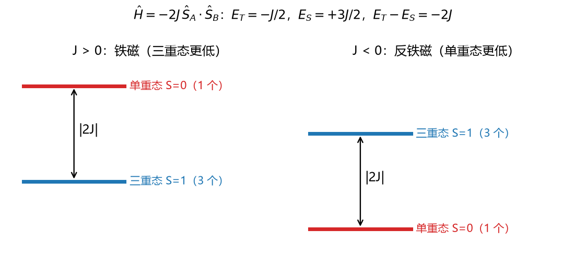
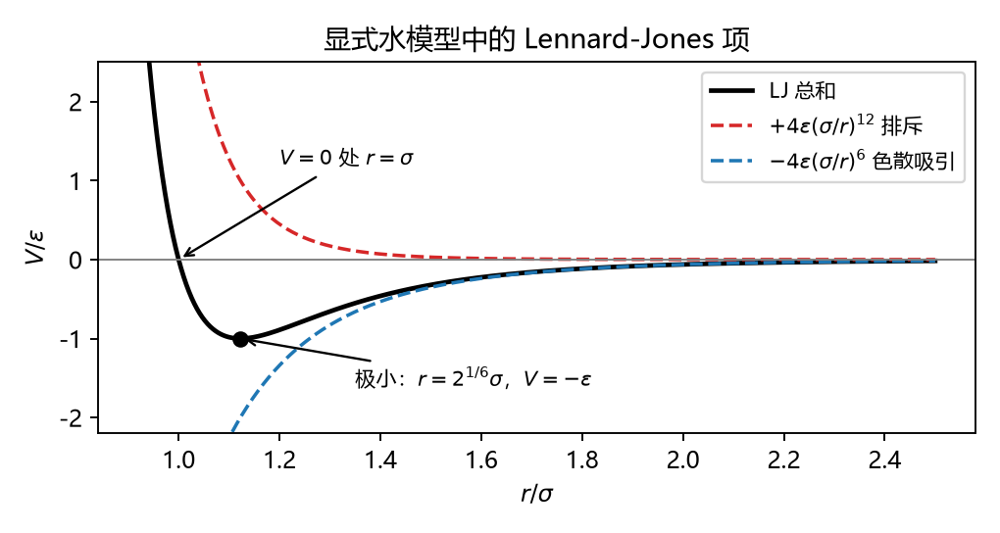
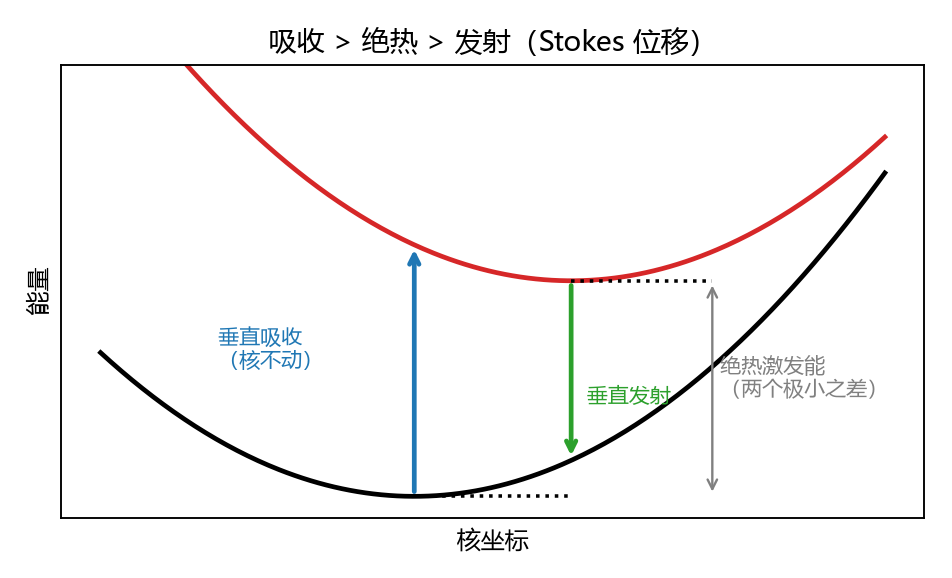

CM5235 Applied Computational Chemistry · 期中题库
第三批：L5 密度泛函理论、磁耦合与 TD-DFT · L6 波函数分析、相对论效应、溶剂化、非共价作用 · 跨讲综合题
格式同前：判断公式辨析，情景给数据或现象要你分析，单选多选选项是几种不同的推理，计算简单的数值计算，简答写出推理过程。
很多情景题直接用了你 HW2 的计算结果（2-氯苯酚的四种方法、Cu₂ 的 BS-DFT、水团簇的 MD），做题时可以对照自己的报告看。
L5 · 密度泛函理论
L5 的主线：波函数有 3N 个变量，密度只有 3 个 → HK 定理说密度原则上就够了 → KS 方法用一个“无相互作用的替身体系”算动能，把困难全部塞进 \(E_{xc}\) → \(E_{xc}\) 只能近似（Jacob 阶梯） → 近似带来的系统性问题（自相互作用、色散、离域） → 应用：磁耦合（BS-DFT）和激发态（TD-DFT）。
A HK 定理与 KS 方法
判断5.1 Hohenberg–Kohn 定理
- 第一定理：基态电子密度唯一地决定了外势 \(V_{ext}\)（最多差一个常数），因此决定了 Hamiltonian 和体系的所有性质。
- 第一定理对激发态的电子密度同样成立。
- 第一定理的证明（反证法）用到了变分原理。
- HK 定理给出了泛函 \(F_{HK}[\rho]\) 的具体表达式，所以 DFT 原则上是精确的，实际计算中也是精确的。
- 第二定理是一个关于密度的变分原理：把任何非基态的密度代入精确的能量泛函，得到的能量都比基态高。
答案
| 说法 | 判断 | 理由 |
|---|
| (1) | ✓ | 分子由核的位置和电荷定义，而这些信息全部体现在 \(V_{ext} = -\sum Z_A/|\mathbf R_A - \mathbf r|\) 里（L5 p7）。密度 → 外势 → Hamiltonian → 一切。直观上，密度对全空间的积分给出电子数，密度在核处的尖峰给出核的位置和电荷。 |
| (2) | ✗ | 证明中用到的是“Ψ 是基态”，只有基态才有 \(E_0 = \min\langle\Psi|\hat H|\Psi\rangle\)。激发态要用别的理论，比如 TD-DFT。 |
| (3) | ✓ | 假设两个不同的外势给出同一个密度，对两者分别用变分原理（Ψ′ 不是 H 的基态，所以能量更高），两个严格不等式相加，得到 \(E_0 + E_0' < E_0 + E_0'\)，矛盾（L5 p15）。严格的“<”要求基态不简并。 |
| (4) | ✗ | HK 定理只证明了这个泛函存在，没有告诉我们它长什么样（L5 p20：“the (unknown) Hohenberg–Kohn functional”）。实际计算必须近似，这才有了各种泛函。 |
| (5) | ✓ | 它和 L3 的变分原理是同一个思想，只是变量从波函数换成了密度。注意：这只对精确泛函成立。用近似泛函算出的能量可能低于真实值，所以 DFT 能量不是一个严格的上界。 |
计算5.2 LDA 交换能：\(E_x^{LDA}[\rho] = -C_x\int\rho(\mathbf r)^{4/3}d\mathbf r\)；Hartree 能：\(J[\rho] = \frac12\iint\dfrac{\rho(\mathbf r)\rho(\mathbf r')}{|\mathbf r - \mathbf r'|}\)；外势能：\(\int\rho\,v_{ext}\)。
(a) 如果把密度处处乘以 2，这三项分别变为原来的几倍？
(b) 对只有一个电子的 H 原子，精确理论中 Hartree 能必须被交换能完全抵消。已知 \(J[\rho_{1s}] = 0.3125\) Ha，而局域近似（按自旋极化的 LSDA 计算）给出 \(E_x = -0.268\) Ha。剩下多少？这说明了什么？
答案
(a) 外势能 ∝ ρ，变为 2 倍；LDA 交换能 ∝ \(\rho^{4/3}\)，变为 \(2^{4/3} = 2.52\) 倍；Hartree 能 ∝ \(\rho^2\)（密度乘密度），变为 4 倍。
(b) \(0.3125 - 0.268 = 0.045\) Ha ≈ 1.2 eV，这就是这个电子“自己排斥自己”的残留，即自相互作用误差。
从 (a) 可以看出这不是一个偶然的数值误差：J 按 \(\rho^2\) 变化，LDA 交换按 \(\rho^{4/3}\) 变化，两者的函数形式不同，不可能对所有密度都正好抵消。HF 中 \(K_{ii} = J_{ii}\)，是用同一个积分写出来的，所以能严格抵消（第一批 2.13 题）。
后果：电子残留的自排斥使它倾向于分散开以降低排斥，于是电子过度离域（L5 p32：“overdelocalization”）。电荷转移态、反应能垒、阴离子都因此出现系统偏差。
公式在说什么
·泛函：输入一个函数，输出一个数（L5 p18）。\(E_x^{LDA}[\rho]\) 把整个密度分布变成一个能量。
·局域：LDA 的被积函数只依赖于这一点的密度，等于把每个小体积元都当作一块密度相同的均匀电子气。所以它对密度变化平缓的体系（金属）表现较好，对分子（密度变化剧烈）偏差较大。
·\(\rho^{4/3}\) 的来源：均匀电子气的交换能密度正比于 \(\rho^{1/3}\)，再乘以电子数密度 ρ。
判断5.3 Kohn–Sham 方法
- KS 轨道组成的 Slater 行列式就是真实体系的多电子波函数。
- KS 体系的动能 \(T_s\) 不等于真实的动能 T，两者的差被放进了 \(E_{xc}\)。
- 如果知道精确的 \(E_{xc}\)，KS 方法就能给出精确的基态能量和电子密度。
- KS 方程和 HF 方程的结构相同（单电子本征方程，自洽迭代），计算量也相近。
- \(E_{xc}\) 通常要在空间格点上数值积分，所以格点太粗会让能量和频率出现数值噪声。
答案
| 说法 | 判断 | 理由 |
|---|
| (1) | ✗ | KS 体系是一个虚构的“无相互作用电子”体系，唯一的要求是它的密度和真实体系相同。KS 行列式只是用来得到这个密度的工具，不是真实的波函数。所以严格来说，DFT 下的 \(\langle S^2\rangle\) 只是一个参考值。 |
| (2) | ✓ | 无相互作用电子的动能可以用轨道精确计算，这是 KS 的关键想法：动能是能量里最大的一项，这样它的绝大部分就被准确算出了。剩下的小差值 \(T - T_s\) 属于相关效应，和交换、相关一起放进 \(E_{xc}\)。 |
| (3) | ✓ | KS 本身是一个精确的变换（L5 p22：“an exact transformation”）。所有的近似都只在 \(E_{xc}\) 里。 |
| (4) | ✓ | 纯泛函甚至可以更便宜：它不需要非局域的交换积分 K，可以配合 RI 加速 Coulomb 项。杂化泛函要算一部分 HF 交换，代价就接近 HF。 |
| (5) | ✓ | \(E_{xc}\) 的被积函数形式复杂（例如 L5 p29 的 LYP），无法解析积分。HW1 用的 int=ultrafine、HW2 用的 DefGrid3 都是在加密格点。 |
公式在说什么 \(E[\rho] = T_s[\rho] + \int\rho\,v_{ext} + J[\rho] + E_{xc}[\rho]\)
\(E_{xc} = (T - T_s) + (V_{ee} - J)\)：“真实体系比替身体系多出来的动能” + “真实电子排斥比经典 Hartree 排斥多出来（或少出来）的部分”（交换、相关、自相互作用的修正）。
KS 方程：\(\left[-\frac12\nabla^2 + v_{ext} + v_H + v_{xc}\right]\phi_i = \varepsilon_i\phi_i\)，其中 \(v_{xc} = \delta E_{xc}/\delta\rho\)（泛函导数）。与 HF 相比，只是把非局域的 \(-\hat K\) 换成了局域的 \(v_{xc}\)。
B 泛函的阶梯与已知缺陷
情景单选5.4 讲义 L5 p37 的基准表中，多参考体系键能（MRBE）的平均绝对误差为：BLYP 27、PBE 60、B3LYP 91、PBE0 117、HF 304 kJ/mol。杂化泛函在“阶梯”上更高，为什么在这类体系中反而比纯 GGA 更差？
- 杂化泛函的格点更粗
- 杂化泛函混入了 HF 交换，也就把 HF 在近简并体系中的失败（缺少静态相关）部分带了进来。纯 GGA 的交换空穴是局域的，碰巧模拟了一部分静态相关，误差抵消得更好
- 多参考体系不存在电子相关
- 表中数据有误，阶梯越高一定越好
答案：B
思路
- 看表中的规律：HF 交换的比例越大（BLYP 0% → B3LYP 20% → PBE0 25% → HF 100%），MRBE 误差越大，而且单调增长。这说明问题出在“HF 交换”这个成分上。
- HF 交换是非局域的，精确地属于单个行列式，不擅长描述键断裂等近简并情况（L4）。
- 近似的 GGA 交换空穴比精确的更局域，某种程度上相当于把“电子被局域在各自原子上”的效果（静态相关）也带了进来，误差碰巧对消。
结论：DFT 不能“系统地改进”（L5 p31：“Systematic improvability … much less clear for DFT”），阶梯更高不代表每类问题都更好，这和 CI、CC 加更多激发就一定更好不同。讲义给的建议是：先查文献，看你这类体系用什么泛函好。
公式在说什么 Jacob 阶梯（Perdew 分类，L5 p36），每上一级多用一种信息：
① LDA：ρ；② GGA：ρ、∇ρ；③ meta-GGA：再加动能密度 τ 或 \(\nabla^2\rho\)；④ 杂化：再加 HF 交换（需要占据轨道）；⑤ 双杂化：再加 MP2 型相关（需要虚轨道，所以变成 \(N^5\)）。
判断5.5 B3LYP 与双杂化泛函的公式
\(E_{xc}^{B3LYP} = (1-a)E_x^{LSDA} + aE_x^{HF} + b\Delta E_x^{B88} + (1-c)E_c^{LSDA} + cE_c^{LYP}\)，\(a = 0.20\)，\(b = 0.72\)，\(c = 0.81\)
\(E_{xc}^{DH} = (1-a)E_x^{DFT} + aE_x^{HF} + (1-b)E_c^{DFT} + bE_c^{MP2}\)
- B3LYP 中精确（HF）交换占 20%。
- a、b、c 是由理论推导出来的，所以 B3LYP 属于“从头算”（ab initio）方法。
- 相关能中，LYP 占 81%，LSDA 占 19%。
- 双杂化泛函的计算量和普通杂化泛函一样。
- 如果取 a = 1、b = 0，交换部分就和 HF 完全一样。
答案
| 说法 | 判断 | 理由 |
|---|
| (1) | ✓ | \(aE_x^{HF}\)，a = 0.20。 |
| (2) | ✗ | 讲义原话：系数是拟合实验数据得到的，“This disqualifies DFT from the ab initio methods category”。 |
| (3) | ✓ | c = 0.81 对应 LYP，1 − c = 0.19 对应 LSDA 相关。 |
| (4) | ✗ | MP2 型相关项要用虚轨道做积分转换，标度为 \(N^5\)（L5 p30），比杂化泛函（约 \(N^4\)）贵。 |
| (5) | ✓ | \((1-a)E_x^{LSDA} = 0\)，梯度校正也为 0，只剩 \(E_x^{HF}\)。但相关部分仍然存在，所以它不是 HF，而是“HF 交换 + DFT 相关”。 |
情景多选5.6 HW2 Ex1 和 Ex4 中，2-氯苯酚（def2-TZVP，气相）的结果：
| HOMO (eV) | LUMO (eV) | 能隙 (eV) | TD-DFT S₁ (eV) | S₁ 的主要组成 |
|---|
| PBE | −5.68 | −1.49 | 4.19 | 4.66 | HOMO→LUMO 0.81 |
| B3LYP | −6.45 | −0.69 | 5.76 | 4.99 | HOMO→LUMO 0.79 |
下列说法正确的是：
- B3LYP 的能隙比 PBE 大，主要因为它混入了 20% 的 HF 交换。HF 的虚轨道感受到全部 N 个电子，会把 LUMO 往上推
- 如果用纯 HF 计算，能隙会比 5.76 eV 更大
- PBE 的 S₁ 高于它的能隙，B3LYP 的 S₁ 低于它的能隙：杂化泛函的响应核中包含部分电子–空穴吸引，纯 GGA 几乎没有
- S₁ 以 HOMO→LUMO 为主（约 80%），所以用轨道图像来解释这个激发是有意义的
- KS 的 HOMO–LUMO 能隙就等于精确的光学激发能
答案：A、B、C、D
思路：把第一批 2.14 题（HF 能隙为什么偏大）推广到 DFT。
- 纯 GGA 中，占据轨道和虚轨道感受的是同一个局域势 \(v_{xc}\)，虚轨道不会像 HF 那样被“多一个电子的排斥”推高，所以 GGA 的能隙最小，而且接近激发能。
- HF 交换的比例越大，虚轨道越像 HF 的虚轨道，能隙越大：PBE 4.19 < B3LYP 5.76 < HF（更大）。
- TD-DFT 在能隙的基础上加修正：电子–空穴吸引使激发能降低，交换耦合使单重态升高。B3LYP 的 HF 交换部分提供了电子–空穴吸引，所以 S₁ 低于能隙；PBE 缺少这一项，只剩使能量升高的项，所以 S₁ 高于能隙。
- 两种方法的 S₁ 只差 0.33 eV，而能隙相差 1.57 eV，所以能隙不能直接当激发能用，必须做 TD-DFT（E 错）。
判断5.7 DFT 的典型失败（L5 p32）及其来源
- 普通 GGA 和杂化泛函预测 He₂、Ne₂ 等稀有气体二聚体不能稳定存在，原因是它们描述不了长程的电子相关（色散）。
- DFT 高估电荷转移复合物的结合能，也低估电荷转移激发能，两者都和自相互作用误差导致的过度离域有关。
- 氢键体系中，DFT 给出的重原子间距往往偏短。
- 色散作用是弱作用，在大体系中可以忽略。
- 所有这些失败的根源是 \(E_{xc}\) 的近似形式，而不是 KS 框架本身。
答案
| 说法 | 判断 | 理由 |
|---|
| (1) | ✓ | 色散来自两团电子云之间瞬时涨落的关联。LDA 和 GGA 只看局部的 ρ 和 ∇ρ，两团电子云不重叠时，它们看不到对方。 |
| (2) | ✓ | 过度离域使部分电荷转移后的态显得过于稳定，所以结合能偏高、CT 激发能偏低。长程校正泛函（5.8 题）就是专门针对这个问题的。 |
| (3) | ✓ | 讲义原话。同样与过度离域有关：体系倾向于让电子在两个分子之间共享。 |
| (4) | ✗ | 每一对原子之间的作用很弱，但数目按 \(N^2\) 增长，大体系中累加起来很可观（讲义：“increasingly important for large systems (it is cumulative)”）。所以 L5 的建议是：小体系可以忽略，大体系一定要加色散校正。 |
| (5) | ✓ | 5.3 题 (3)：KS 框架是精确的。 |
计算5.8 长程校正泛函把 Coulomb 算符拆成两部分：\(\dfrac{1}{r_{12}} = \dfrac{1 - \mathrm{erf}(\omega r_{12})}{r_{12}} + \dfrac{\mathrm{erf}(\omega r_{12})}{r_{12}}\)。前一项（短程）用 DFT 交换，后一项（长程）用 HF 交换。取 \(\omega = 0.33\ \text{bohr}^{-1}\)。
(a) 两个电子相距 1 bohr 和 6 bohr 时，长程部分分别占多少？（\(\mathrm{erf}(0.33) = 0.359\)，\(\mathrm{erf}(1.98) = 0.995\)）
(b) 为什么这样能改善电荷转移激发能？(c) ω → 0 和 ω → ∞ 分别对应什么？
答案
(a) 1 bohr：长程部分占 35.9%，大部分仍由 DFT 描述；6 bohr：占 99.5%，几乎完全是 HF 交换。
(b) 电荷转移激发中，电子和空穴分别在相距较远的两个片段上，它们之间的吸引应该是 −1/R。只有 HF 交换在长程上能给出正确的 −1/R 行为；纯 DFT 交换在长程上衰减得太快，就会低估 CT 激发能。长程改用 HF 交换，就修正了这一点，同时也去掉了长程的自相互作用。
(c) ω → 0：erf → 0，全部用 DFT 交换，退回普通泛函。ω → ∞：erf → 1，全部用 HF 交换。ω 的意义是“从哪个距离开始切换”，\(1/\omega \approx 3\) bohr ≈ 1.6 Å。
思路：短程用 DFT，是因为 DFT 交换在短程里和相关误差互相抵消得好（5.4 题的道理）；长程用 HF，是因为那里需要精确的 −1/R 渐近行为。erf 函数就是一个平滑的开关。
计算5.9 Grimme 色散校正：\(\Delta E_{disp} = -\sum_{n=6,8}s_n\sum_{A<B}\dfrac{C_n^{AB}}{R_{AB}^n}f_{damp}(R_{AB})\)。
(a) 一对原子的距离从 3.5 Å 增加到 7 Å，\(C_6\) 项减小多少倍？
(b) 两个各含 50 个原子的分子相互靠近，分子间有多少个原子对？
(c) 阻尼函数 \(f_{damp}\) 为什么是必要的？
答案
(a) \(2^6 = 64\) 倍。色散衰减得很快，是短程到中程的作用。
(b) 50 × 50 = 2500 对。每一对都很弱，但加起来可能达到几十 kcal/mol，这就是“cumulative”的意思，也是大体系一定要加色散校正的原因。
(c) \(1/R^6\) 在 \(R \to 0\) 时发散，而短距离上泛函本身已经包含了一部分相关，再加上去就会重复计算。阻尼函数在短距离把校正平滑地关掉，只在中长程起作用。
思路：D3 就是把力场里的色散项（L6 Lennard-Jones 的 \(-C_6/r^6\)）直接加到 DFT 能量上，是一种经验校正。\(s_n\) 与所用的泛函有关，因为不同泛函本身“自带”的短程相关程度不同。
C 磁耦合与激发态
计算5.10 Heisenberg 模型 \(\hat H = -2J\hat S_A\cdot\hat S_B\)，两个自旋均为 1/2。利用 \(2\hat S_A\cdot\hat S_B = \hat S^2 - \hat S_A^2 - \hat S_B^2\)：
(a) 推出三重态和单重态的能量，以及它们的能量差。
(b) HW2 中 ZORA/def2-TZVP 的结果：\(E_{HS} - E_{BS} = +127.8\ \text{cm}^{-1}\)，\(\langle S^2\rangle_{HS} = 2.0037\)，\(\langle S^2\rangle_{BS} = 0.9960\)。用 Yamaguchi 公式 \(J = \dfrac{E_{BS} - E_{HS}}{\langle S^2\rangle_{HS} - \langle S^2\rangle_{BS}}\) 求 J，并判断是铁磁还是反铁磁。
(c) 为什么分母约等于 1？
(d) 298 K 时三重态占多少？

答案
(a) \(E(S) = -J\left[S(S+1) - \tfrac34 - \tfrac34\right]\)。三重态（S = 1）：\(-J(2 - 1.5) = -J/2\)；单重态（S = 0）：\(-J(0 - 1.5) = +3J/2\)。\(E_T - E_S = -2J\)。
检验：\(3\times(-J/2) + 1\times(3J/2) = 0\)，按简并度加权的平均值为零（讲义 p41 的 verification），说明这个模型只是把能级劈裂开，不改变重心。
(b) \(J = -127.8/(2.0037 - 0.9960) = -127.8/1.0077 = -126.8\ \text{cm}^{-1} < 0\)，反铁磁，单重态更低，比三重态低 \(2|J| \approx 254\ \text{cm}^{-1}\)。
(c) BS 行列式（一个 Cu 上 α，另一个上 β）大约是单重态和三重态各一半的混合（第一批 2.22 题），所以 \(\langle S^2\rangle_{BS} \approx \frac12\times0 + \frac12\times2 = 1\)；而 \(\langle S^2\rangle_{HS} = 2\)，两者之差约为 1。
同理，\(E_{BS} \approx \frac12(E_S + E_T)\)，于是 \(E_{BS} - E_{HS} = \frac12(E_S - E_T) = J\)。这就是 BS 方法的核心：用一个单行列式的“混合态”间接得到单重态的信息。
(d) \(n_T/n_S = 3e^{-254/207} = 3\times0.293 = 0.88\)，三重态占 0.88/1.88 ≈ 47%。室温下将近一半的分子处在三重态，所以这个“反铁磁”化合物在室温下仍然表现出明显的顺磁性；只有降到很低的温度，它才全部回到单重态（第一批 2.1 题）。
公式在说什么
·J 的符号约定：\(\hat H = -2J\hat S_A\cdot\hat S_B\) 时，J > 0 为铁磁，J < 0 为反铁磁。ORCA 用的也是这个约定。不同文献有用 \(-J\) 或 \(+J\) 的，比较数值前要先核对约定。
·HW2 输出里的三个 J：J(1)（Noodleman，分母取 \(S_{max}^2 = 1\)，适用于磁轨道重叠很弱的情况）、J(2)（分母取 \(S_{max}(S_{max}+1) = 2\)，适用于强重叠）、J(3)（Yamaguchi，用实际的 \(\langle S^2\rangle\) 在两者之间插值）。这里 \(\langle S^2\rangle_{BS} \approx 1\)，说明重叠很弱，所以 J(3) ≈ J(1)。
情景多选5.11 HW2 Ex5（B3LYP）中 J 的计算结果（cm⁻¹）：
| 基组 | 非相对论 | DKH | ZORA |
|---|
| SVP 级别 | +38.0 | −21.7 | −53.5 |
| TZVP 级别 | −78.7 | −127.8 | −127.8 |
三种处理的总能量分别约为 −6077、−6107、−6123 Ha。改用更严格的格点和 SCF 收敛标准后，J 的变化不超过 0.2 cm⁻¹。下列判断正确的是：
- 三种处理的总能量相差几十 Hartree，说明这些计算不可信
- J 是两个约 −6000 Ha 的能量之差，量级只有 \(10^{-4}\) Ha（1 cm⁻¹ = \(4.56\times10^{-6}\) Ha），所以对 SCF 收敛和积分格点要求很严。加严后 J 几乎不变，说明数值上已经收敛
- SVP 级别下非相对论和 DKH 的 J 符号相反，但两者用的基组不同（DKH 版本是重新收缩的），所以不能把符号变化全部归因于相对论效应
- 非相对论从 SVP 换到 TZVP，J 变化了约 117 cm⁻¹，比 TZVP 级别下相对论带来的变化（约 49 cm⁻¹）还大。对这个体系，基组是影响 J 的首要因素
- TZVP 级别下 DKH 和 ZORA 给出相同的 J，说明两种标量相对论近似对这个性质结论一致
答案：B、C、D、E
思路
- A 错：不同 Hamiltonian 的总能量本来就不能比。相对论主要影响 Cu 的 1s、2s 内层电子（速度快，见 L6），使总能量改变几十 Hartree，但 HS 和 BS 两个态的内层几乎相同，这部分在求能量差时抵消了。J 是在同一个 Hamiltonian 下求的能量差，这才是有意义的量。
- B：小差值对数值误差很敏感，这和 L1 为什么必须用双精度是同一个道理。用加严的设置复算，就是在检验数值收敛。
- C、D：做对比时要做到一次只改一个因素。同一基组级别下比较相对论的影响，同一种处理下比较基组的影响，才分得清是谁造成的差别。
- E：DKH 和 ZORA 是两种不同的标量相对论近似，给出相同结果，说明结论可靠。
这道题想让你体会的：J 只有几十到一百 cm⁻¹，而计算中的各种选择（基组、泛函、相对论处理）都能带来同样量级的变化。所以 BS-DFT 算出的 J，通常只能相信它的符号和大致数量级，而且需要检查它对这些选择是否敏感。
判断5.12 TD-DFT 与频率依赖极化率 \(\alpha(\omega) \approx \sum_n\dfrac{|\langle\psi_0|\hat{\mathbf r}|\psi_n\rangle|^2}{\omega - (E_n - E_0)}\)（讲义 L5 p44 的简化形式）
- 当光的频率 ω 等于某个激发能 \(E_n - E_0\) 时，α(ω) 发散。TD-DFT 就是通过找这些“共振点”来得到激发能的。
- 跃迁偶极矩 \(\langle\psi_0|\hat{\mathbf r}|\psi_n\rangle = 0\) 的态，在吸收谱中不出现（暗态）。
- TD-DFT 在计算过程中真的对体系做了时间演化。
- TD-DFT 适用于低激发态；接近电离能的高激发态描述得很差。
- 基态自旋污染严重时，TD-DFT 结果仍然可靠，因为激发态是单独计算的。
答案
| 说法 | 判断 | 理由 |
|---|
| (1) | ✓ | 分母为零处就是共振。这是 L5 p44 “propagator”方法的思想：不必显式地构造每一个激发态波函数，直接求响应的极点。 |
| (2) | ✓ | 分子（跃迁偶极矩的平方）正比于振子强度 f。HW2 Ex4 中 HOMO→LUMO+2 的态 f = 0.0000–0.0003，就是暗态。 |
| (3) | ✗ | 讲义原话：“there is no actual time-dependency”。它是从含时方程出发，经过绝热近似（“失去时间记忆”），最终变成一个本征值问题。 |
| (4) | ✓ | L5 p45。高激发态常常有 Rydberg 或电荷转移性质，而近似泛函的长程行为不对（5.8 题）。 |
| (5) | ✗ | TD-DFT 是在基态的基础上计算响应，基态不好，激发态也不会好。L5 p45 列出的适用条件包括：基态能被单个行列式很好地描述，自旋污染小。 |
情景多选5.13 按照讲义 L5 p38 的建议，下列哪些做法是恰当的？
- 闭壳层有机分子、单自由基：直接用 DFT（自由基用非限制性的 UKS）
- 双自由基、强相关的过渡金属体系：用 DFT 之前要谨慎，考虑多组态方法，或者用 BS 方法间接处理
- 阴离子：加弥散函数，并优先考虑长程校正泛函
- 含 Pt、Pd 的体系：考虑相对论效应（DKH 或 ZORA）
- 先花大量时间自己做基准测试，比查文献看别人怎么选泛函更高效
答案：A、B、C、D
每条建议背后都对应前面的一个原理：
- A、B：KS 用单个行列式，能不能用 DFT，取决于有没有近简并（L4 静态相关）。
- C：阴离子的额外电子分布在远处（L3 基组），而近似泛函的自相互作用对阴离子影响最大（5.2 题），长程校正正好修正这一点。
- D：重元素内层电子速度接近光速（L6）。
- E 与讲义相反：“Finding literature is faster than performing the benchmark study by yourself.”
L6 · 波函数分析、相对论效应、溶剂化
L6 有三块内容，它们的共同点是“把孤立分子的理想计算拉回现实”：① 从波函数中提取化学家能用的量（电荷、键级、静电势），它们大多不是可观测量，取决于划分方法；② 重元素要加相对论修正；③ 真实化学发生在溶液里，要处理溶剂。
A 电荷、键级、静电势、局域轨道
情景多选6.1 HW2 Ex1 中，2-氯苯酚（B3LYP/def2-TZVP，气相）的原子电荷：
| 原子 | Mulliken | Löwdin |
|---|
| Cl | −0.139 | +0.375 |
| O | −0.378 | +0.095 |
| H（O–H 上） | +0.308 | +0.175 |
在水溶剂中，O 的 Mulliken 电荷从 −0.378 变为 −0.417。下列说法正确的是：
- 原子电荷不是可观测量，它取决于怎么把电子密度分给各个原子，不同方案的结果差别可以大到符号相反
- Löwdin 分析先用 \(\mathbf S^{1/2}\) 把基函数正交化再计数，重叠区的电子会重新分配，所以和 Mulliken 结果不同
- Löwdin 给出 O 为正电荷，说明氧原子在这个分子中失去了电子
- 比较同一方案下的变化趋势（比如加溶剂后 O 更负、O–H 上的 H 更正）比比较绝对值更有意义
- Mulliken 电荷对基组很敏感，尤其是加了弥散函数的时候
答案：A、B、D、E
思路
- 电子密度 \(\rho(\mathbf r)\) 是可观测的，但“原子”在分子里并没有明确的边界。每种电荷方案都是一种划分约定（L6 p5–8）。
- Mulliken 的约定：重叠布居对半分；函数放在哪个原子上，它的布居就算给哪个原子。def2-TZVP 中 O、Cl 上的基函数多，而且延伸到了邻近原子的区域，会把邻近原子附近的电子也“算”到自己头上，而 Löwdin 正交化后这个效应被削弱，结果可能完全相反。
- C 错：Löwdin 的 O 为正，是划分方式造成的数值，不代表氧“失去了电子”。从化学上看，O 毫无疑问是富电子的，也可以从静电势图（6.3 题）直接看出来。
- D：同一种方案的系统偏差在比较前后变化时大体抵消，所以趋势更可靠（讲义：Mulliken “shows correct trends”）。溶剂使 O–H 键更极化，是 6.9 题反应场效应的体现。
公式在说什么
·Mulliken：\(q_A = Z_A - \sum_{\mu\in A}(\mathbf{PS})_{\mu\mu}\)（L6 p5）。\(\mathbf{PS}\) 的对角元 = 这个基函数自己的布居 + 它和别人的重叠布居的一半。
·Löwdin：\(q_A = Z_A - \sum_{\mu\in A}(\mathbf S^{1/2}\mathbf{PS}^{1/2})_{\mu\mu}\)。利用 \(\mathrm{Tr}(\mathbf{PS}) = \mathrm{Tr}(\mathbf S^{1/2}\mathbf{PS}^{1/2})\)（迹的循环性），总电子数不变，只是分配方式变了。
·Bader：用电子密度本身的“零通量面”切分原子，只依赖 ρ，对基组不太敏感。
·Hirshfeld：每一点的密度按各个自由原子在该点的密度比例分配。
计算6.2 一根极性键 A–B 的成键轨道：\(\varphi = 0.406\chi_A + 0.800\chi_B\)，\(S_{AB} = 0.30\)，占据 2 个电子（每个原子各贡献 1 个）。
(a) 验证 φ 是归一化的。(b) 求 Mulliken 布居、电荷和重叠布居。(c) 如果把重叠布居全部给电负性更大的 B，A 的电荷变成多少？这说明了什么？
答案
(a) \(c_A^2 + c_B^2 + 2c_Ac_BS = 0.165 + 0.640 + 2\times0.406\times0.800\times0.30 = 0.165 + 0.640 + 0.195 = 1.000\) ✓
(b) \(P_{AA} = 2\times0.165 = 0.330\)，\(P_{BB} = 2\times0.640 = 1.280\)，\(P_{AB} = 2\times0.406\times0.800 = 0.650\)。
重叠布居 \(2P_{AB}S_{AB} = 0.390\)，按 Mulliken 规则对半分，A、B 各得 0.195。
A 的布居 = 0.330 + 0.195 = 0.525，\(q_A = 1 - 0.525 = +0.475\)；B 的布居 = 1.280 + 0.195 = 1.475，\(q_B = -0.475\)。合计 2.000 ✓
(c) A 的布居只剩 0.330，\(q_A = +0.67\)。
同一个波函数、同一个电子密度，只是改变了“重叠区的电子归谁”这一条约定，电荷就从 +0.48 变成了 +0.67。讲义 p6 批评 Mulliken 的第 3 点正是这一条：“Equal partitioning … is without any foundation.” 重叠布居（0.39）本身则可以当作键强度的一个指标（Mulliken 键级，L6 p9）。
情景多选6.3 分子静电势：\(\phi(\mathbf r) = \sum_A\dfrac{Z_A}{|\mathbf R_A - \mathbf r|} - \int\dfrac{\rho(\mathbf r')}{|\mathbf r' - \mathbf r|}d\mathbf r'\)。HW2 把 2-氯苯酚的静电势映射到电子密度等值面上。下列说法正确的是：
- 第一项是核的贡献，总为正；第二项是电子的贡献，总为负
- O 和 Cl 的孤对电子区域会是负值（红色），O–H 上 H 的外侧会是正值（蓝色）
- 静电势完全由电子密度和核的位置决定，原则上可以测量，不像原子电荷那样依赖划分约定
- 一个正离子或者 H 键给体会优先靠近静电势为正的区域
- 在离核非常近的地方，静电势由核项主导，一定为正
答案：A、B、C、E
思路
- 公式中没有任何“划分”：给定 ρ 和核的位置，φ 就完全确定了（C 对）。这是它比原子电荷更可靠的原因。
- 在分子表面，φ 的正负取决于这里是核的正电荷露得多，还是电子云（孤对）堆得多（B 对）。
- E：\(Z_A/|\mathbf R_A - \mathbf r|\) 在核附近发散，而电子贡献始终有限，所以核附近一定为正。
- D 说反了：正离子和 H 键给体（带部分正电荷的 H）会被负电位区域（孤对）吸引，这正是用静电势图预测反应位点和 H 键方向的方法。
判断6.4 轨道局域化（Boys、Edmiston–Ruedenberg、Pipek–Mezey）
- 局域化前后是同一个 Slater 行列式，总能量和电子密度都不变。
- Boys 方法让各轨道的中心彼此尽量远离，等价于让每个轨道尽量紧凑。
- 对乙烯做 Boys 局域化，可能得到两条“香蕉键”，而不是一个 σ 键加一个 π 键。这说明乙烯的双键真的是弯的。
- 用局域轨道做相关计算时，忽略相距很远的轨道对之间的相关，通常仍能保留 95% 以上的相关能。
- 局域轨道能降低计算量，是因为远处轨道之间的双电子积分近似为零，可以直接跳过。
答案
| 说法 | 判断 | 理由 |
|---|
| (1) | ✓ | 局域化只是占据轨道之间的幺正变换（L3 3.3 题 (1)）。 |
| (2) | ✓ | 讲义 p12：“Boys method is equivalent to minimizing the orbital dispersion.” |
| (3) | ✗ | σ + π 和两条香蕉键是同一个行列式的两种等价写法，由 (1) 可知物理上没有区别。讲义称之为“a common orbital localization artefact”。Pipek–Mezey 方法能保持 σ/π 的分离。 |
| (4) | ✓ | 电子相关随距离迅速衰减（L6 p14），这也是 DLPNO 这类局域相关方法可行的物理依据。 |
| (5) | ✓ | 正则轨道遍布整个分子，任意两个都有重叠；局域轨道则各自集中在一小块，远处的积分为零，大量计算可以省掉。这就是第一批 1.2 题中“十年后 CCSD(T) 也只能多算 13 个原子”的出路之一。 |
B 相对论效应
计算6.5 在原子单位下，1s 电子的平均速度约为 \(v \approx Z\)，光速 c = 137.04。
(a) 分别计算 H、Cu（Z = 29）、Au（Z = 79）的 1s 电子的 v/c 和相对论质量因子 \(\gamma = m/m_0 = 1/\sqrt{1 - v^2/c^2}\)。
(b) 类氢原子的轨道半径 \(\propto 1/m\)。Au 的 1s 轨道收缩了多少？
(c) 为什么说 Schrödinger 方程“在相对论意义上是不正确的”？
答案
(a)
| v/c | γ |
|---|
| H | 1/137 = 0.0073 | 1.00003 |
| Cu | 0.212 | 1.023 |
| Au | 0.577 | 1.224 |
(b) 半径变为 1/1.224 = 0.817，收缩约 18%。
(c) 相对论要求空间和时间地位对等（L6 p15），而 Schrödinger 方程对空间是二阶导数（\(\nabla^2\)），对时间是一阶导数（\(\partial/\partial t\)），两者不对称。Dirac 方程对两者都用一阶导数，于是自然得出电子自旋和 4 分量波函数。
后果链（L6 p15）：内层 s 电子变重 → 轨道收缩 → 对外层电子的屏蔽改变。外层 s、p 轨道因为和内层正交也随之收缩；d、f 轨道因为屏蔽增强而膨胀。
Cu 的 γ 只有 1.023，但 HW2 中不同相对论处理的总能量相差 30–46 Ha。原因是这部分能量主要来自内层电子，而内层电子数多、能量大，1% 的相对变化就是几十 Hartree。价层性质（如 J）受到的影响则要看具体情况（5.11 题）。
判断6.6 Pauli–Dirac 近似下的相对论修正项（L6 p18）
\(\left[\dfrac{p^2}{2m} + V - \dfrac{p^4}{8m^3c^2} + \dfrac{Z\,\mathbf s\cdot\mathbf l}{2m^2c^2r^3} + \dfrac{Z\pi\delta(\mathbf r)}{2m^2c^2}\right]\Psi_L = E\Psi_L\)
- 质量–速度项 \(-p^4/8m^3c^2\) 总是降低能量，对动量大的电子（内层、s 电子）影响最大。
- Darwin 项含 \(\delta(\mathbf r)\)，只对在核处有振幅的 s 电子有贡献。
- 自旋–轨道耦合项对 s 电子也有贡献。
- “标量相对论”（DKH、ZORA 的常规用法）只包含质量–速度项和 Darwin 项，自旋仍然是好量子数。
- 所有修正项都含 \(1/c^2\)，所以当 \(c \to \infty\) 时自动回到 Schrödinger 方程。
答案
| 说法 | 判断 | 理由 |
|---|
| (1) | ✓ | 负号，而且 \(\propto p^4\)。它就是 \(\sqrt{p^2c^2 + m^2c^4}\) 展开后的下一项，代表“速度越快，质量越大，动能增长得越慢”。 |
| (2) | ✓ | \(\delta(\mathbf r)\) 只在 r = 0 处不为零，只有 s 电子在那里有振幅（第一批 2.7 题，和 Fermi 接触项是同一个原因）。 |
| (3) | ✗ | s 电子 \(l = 0\)，\(\mathbf s\cdot\mathbf l = 0\)。自旋–轨道耦合会把 p 分裂成 \(p_{1/2}\) 和 \(p_{3/2}\)，把 d 分裂成 \(d_{3/2}\) 和 \(d_{5/2}\)，并且 \(\propto Z/r^3\)，对重原子的内层最显著。 |
| (4) | ✓ | 这两项都不含自旋算符，所以可以沿用普通的单重态、三重态等概念，计算量也只比非相对论略大。自旋–轨道耦合会混合不同的自旋态，需要 2 分量方法或后续的微扰处理（L6 p21：“these terms can be accounted by perturbation”）。 |
| (5) | ✓ | c → ∞ 就是非相对论极限，这也说明了相对论修正的量级约为 \((v/c)^2\)，即 \((Z/137)^2\)。 |
C 溶剂化
计算6.7 Born 模型（离子处在半径为 R 的球形空腔中）：\(\Delta G_{elec} = -\dfrac{q^2}{2R}\left(1 - \dfrac{1}{\varepsilon}\right)\)（原子单位）。
(a) Na⁺ 取 R = 1.8 Å（3.40 bohr），在水中（ε = 78.4）的 \(\Delta G\) 约为多少 kcal/mol？（实验水合能约为 −98 kcal/mol）
(b) 换成正己烷（ε = 1.89），\(\Delta G\) 变为水中的多少？
(c) Cl⁻ 和 Na⁺ 半径相同时，\(\Delta G\) 一样吗？Mg²⁺ 呢？
(d) 讲义说这类球形空腔模型“completely inaccurate for all practical purposes”。从公式看，最大的问题在哪里？
答案
(a) \(\dfrac{1}{2\times3.40}\times\left(1 - \dfrac{1}{78.4}\right) = 0.147\times0.987 = 0.145\) Ha → \(\Delta G \approx -91\) kcal/mol，量级和实验值接近。
(b) \(1 - 1/1.89 = 0.471\)，只有水中的 0.471/0.987 = 48%。
(c) \(\propto q^2\)，与电荷的正负无关，所以 Cl⁻ 与 Na⁺ 相同；Mg²⁺ 是 4 倍（在 R 相同的前提下）。
(d) 结果对 R 非常敏感（\(\propto 1/R\)），而“离子半径”本身没有明确定义；分子的形状也不是球。这就是 PCM 改用“以各原子为中心的一组球的并集”作为空腔的原因，但结果仍然依赖所选的原子半径（L6 p31）。
公式各部分的含义：\(q^2/2R\) 是把电荷“放进”一个半径为 R 的球所需的静电自能；\(1 - 1/\varepsilon\) 是介质把这部分能量“屏蔽掉”的比例。ε = 1（真空）时为 0，没有溶剂化；ε → ∞（理想导体）时为 1。所以只要溶剂的极性足够大，ε 从 30 增加到 80 对结果影响就很小了。
判断6.8 Onsager 模型（偶极子在球形空腔中）\(\Delta G = -\dfrac{\mu^2}{R^3}\cdot\dfrac{\varepsilon - 1}{2\varepsilon + 1}\) 与 PCM 模型
- 对于没有偶极矩的分子（如 CH₄），Onsager 模型给出的静电溶剂化能为零。
- ε → ∞ 时，介电因子 \((\varepsilon - 1)/(2\varepsilon + 1) \to 1/2\)，所以水（0.49）和乙腈（ε = 36，约 0.48）差别很小。
- PCM 中，空腔表面的“表观电荷”由溶质的电场决定，而这些电荷又反过来极化溶质。所以 PCM 计算必须和 SCF 一起迭代。
- PCM 可以正确描述溶质与第一层水分子之间的特定氢键。
- 溶质在 PCM 中的偶极矩通常比气相大。
答案
| 说法 | 判断 | 理由 |
|---|
| (1) | ✓ | 模型只考虑偶极项。实际上 CH₄ 仍有四极矩和色散作用，现代模型会分别计算空腔形成能、色散能等其他项：\(\Delta G = \Delta G_{elec} + \Delta G_{cav} + \Delta G_{disp}\)（L6 p29）。 |
| (2) | ✓ | 77.4/157.8 = 0.49；35/73 = 0.48。极性溶剂之间差别很小，但非极性溶剂（己烷 0.19）与它们差别很大。 |
| (3) | ✓ | 这是“自洽反应场”的含义：溶质的电荷分布 → 溶剂被极化 → 反应场 → 溶质再被极化……和 SCF 的思想相同。讲义中 IPCM、SCIPCM 连空腔的形状也在迭代中更新。 |
| (4) | ✗ | 连续介质没有分子结构，也就没有特定的氢键方向。讲义 p33 建议：第一层溶剂（比如氢键）要用显式溶剂分子加进去，再在外面套上 PCM。 |
| (5) | ✓ | 反应场会把溶质的电荷进一步分开。HW2 中 2-氯苯酚的偶极矩：B3LYP 从 0.88 D（气相）增至 1.09 D（水）；PBE 从 0.75 D 增至 0.90 D。 |
公式在说什么 PCM 表面电荷 \(\sigma(\mathbf r) = \dfrac{\varepsilon - 1}{4\pi\varepsilon}\dfrac{\partial\phi}{\partial n}\)（L6 p30）
·\(\partial\phi/\partial n\)：溶质电场在空腔表面法向上的分量。哪里电场强，哪里感应出的电荷就多。
·\((\varepsilon - 1)/\varepsilon\)：和 Born 公式一样的屏蔽因子，ε = 1 时表面电荷为零。
情景多选6.9 HW2 Ex1 和 Ex4 中，2-氯苯酚在 PCM 水溶剂中和气相中的对比（B3LYP）：O–H 伸缩振动从 3722 降到 3705 cm⁻¹；S₁ 从 4.985 变为 4.974 eV；在气相中排在前 5 个激发态之外的一个亮态（HOMO−1→LUMO，f = 0.53）加入水后进入了前 5 个，排在第 4 位。下列解释正确的是：
- O–H 频率降低：反应场使 O–H 键更加极化、略微变弱
- S₁ 几乎不变，说明这个 π→π* 激发前后偶极矩变化不大，溶剂对基态和激发态的稳定作用相近
- 比较气相和水中的激发态时，应该按“主要跃迁”配对，而不是按态的编号，因为溶剂可能改变激发态的排序
- PCM 已经包括了 O–H 与水分子之间的特定氢键，所以频率变化是定量准确的
- 振子强度很大的亮态受溶剂影响更明显，与它的跃迁偶极矩大有关
答案：A、B、C、E
思路
- 溶剂对一个态的稳定作用大致正比于这个态的偶极矩平方（6.8 题的 \(\mu^2\)）。激发前后偶极矩相近，激发能就几乎不变；偶极矩变化大（比如电荷转移态），就会有明显的溶剂位移。
- C 是实际计算中很重要的一条：排序可能改变，所以“S₂”在气相和水中可能不是同一个态（HW2 中 B3LYP 的 S₂、S₃ 就互换了）。
- D 错：PCM 只有平均的介电响应，特定氢键要靠显式水分子（6.8 题 (4)）。这里算出的 17 cm⁻¹ 只反映了体相极化，真实水溶液中形成氢键后，O–H 频率的降低会大得多。
- E：跃迁偶极矩大的态电荷分布变化更剧烈，与反应场的耦合也更强。
计算6.10 Poisson–Boltzmann 模型中，离子按 Boltzmann 分布：\(n_\pm = n_0\exp(\mp ze\phi/k_BT)\)。298 K 时 \(k_BT/e = 25.7\) mV。
(a) 在 φ = +25.7 mV 的地方，一价正离子和负离子的浓度分别是体相的多少倍？
(b) 这对一个带电的表面意味着什么？（讲义 p35 的图：带负电的 DNA 周围富集了 Na⁺）
(c) 这个公式和 L2 的 Boltzmann 分布是什么关系？
答案
(a) 正离子：\(e^{-1} = 0.37\) 倍；负离子：\(e^{+1} = 2.72\) 倍。
(b) 正电位附近负离子富集、正离子被排开；负电位附近正好相反（DNA 周围的 Na⁺）。结果在带电表面外形成一层电荷相反的“离子氛”，把表面电荷屏蔽掉。所以离子强度越高，静电作用的距离越短。
(c) 完全是同一个公式：\(n_i/n_j = e^{-\Delta E/k_BT}\)，只是这里的能量差 \(\Delta E = ze\phi\) 来自离子在静电势中的势能。然后把离子的净电荷密度代入 Poisson 方程 \(\nabla^2\phi = -\rho/\varepsilon\varepsilon_0\)，电势和电荷又相互决定，也需要自洽求解。
讲义说它不适用于“dielectric liquids”：它假设溶液中有可自由移动的点电荷（离子），适合电解质溶液。
判断6.11 显式水模型（TIP3P、TIP4P、SPC 等）的能量：\(E = \sum\dfrac{q_iq_j}{r_{ij}} + \sum4\varepsilon\left[\left(\dfrac{\sigma}{r_{OO}}\right)^{12} - \left(\dfrac{\sigma}{r_{OO}}\right)^6\right]\)

- Lennard-Jones 势的最低点在 \(r = 2^{1/6}\sigma \approx 1.12\sigma\)，阱深为 ε。
- \(r^{-6}\) 项有物理来源（色散），\(r^{-12}\) 项主要是为了计算方便而选的经验形式。
- 这些模型的原子电荷是固定的，所以不能描述水分子在不同环境下的极化。
- 讲义 p25 的对比：这些模型能很好地重现 O–O 径向分布函数，但偶极矩等静电性质偏差较大。
- 经典水模型可以描述 O–H 键的断裂和质子转移。
答案
| 说法 | 判断 | 理由 |
|---|
| (1) | ✓ | 令 \(dV/dr = 0\)：\(12\sigma^{12}/r^{13} = 6\sigma^6/r^7\) → \(r^6 = 2\sigma^6\)。代入得 V = −ε。另外 r = σ 时 V = 0。 |
| (2) | ✓ | 色散的 \(-C_6/r^6\) 可以由二阶微扰论推出（L6 p37，也是 5.9 题 D3 的形式）；排斥来自电子云重叠后的 Pauli 排斥，真实形式更接近指数，\(r^{-12} = (r^{-6})^2\) 只是计算方便。 |
| (3) | ✓ | 这正是 (4) 中偶极矩不准的原因：真实水分子在液体中会被周围分子极化，偶极矩比气相大。 |
| (4) | ✓ | 参数是拟合结构和热力学性质得到的，所以这些性质准，其他性质不一定准。 |
| (5) | ✗ | 键是固定的（或者只是谐振子），没有电子结构，无法成键或断键。要描述这类过程，就得用量子化学计算力，也就是 HW2 Ex6 的 DFT 和 XTB 分子动力学（ab initio MD）。 |
情景计算6.12 HW2 Ex6 的分子动力学：DFT（PBE）模拟 20 个水分子，100 fs（200 步）；XTB 模拟 128 个水分子，2500 fs（5000 步）。结果：DFT 的平均温度为 454 K、标准差 45.6 K；XTB 的平均温度为 399 K、标准差 21.8 K（目标都是 400 K）。
(a) 两者的步长都是 0.5 fs。为什么步长必须这么小？（O–H 伸缩频率约 3700 cm⁻¹，光速 \(c = 3.0\times10^{10}\) cm/s）
(b) 由能量均分定理，N 个原子的动能 \(\langle K\rangle = \frac32Nk_BT\)，瞬时温度的相对涨落 \(\sigma_T/T = \sqrt{2/(3N)}\)。估算两次模拟的温度涨落，并和实际结果比较。
(c) DFT 模拟的平均温度偏离目标 54 K，可能的原因是什么？
答案
(a) O–H 振动周期 \(= 1/(c\tilde\nu) = 1/(3.0\times10^{10}\times3700)\) s ≈ 9 fs。要准确积分运动方程，每个振动周期至少要走 10–20 步，所以步长约为 0.5 fs。体系中最快的运动决定了步长（第一批 2.1 题：振动是量子化的高频运动）。
(b) DFT：60 个原子，\(\sqrt{2/180} = 0.105\)，乘以 454 K 约 48 K，实际为 45.6 K ✓。
XTB：384 个原子，\(\sqrt{2/1152} = 0.042\)，乘以 400 K 约 17 K，实际为 21.8 K，量级一致。
体系越小，温度涨落越大（\(\propto 1/\sqrt N\)），所以小团簇的“瞬时温度”本身就在大幅波动，只有长时间平均才有意义。
(c) 100 fs 太短，热浴还来不及把体系调到目标温度；而且初始结构来自冰晶，结构弛豫时势能转化为动能，温度会先升高。XTB 跑了 2500 fs，平均值就很接近 400 K。
代价：DFT 每一步都要做一次完整的 SCF 求力，只能跑 200 步；XTB 是半经验（紧束缚）方法，大部分积分被参数化了（L3 3.14 题），可以跑 5000 步、体系也大 6 倍。精度与模拟时长之间的取舍，和 L4 中方法与体系大小之间的取舍，是同一个问题。
判断6.13 非共价相互作用（L6 p36–38）
- 普通氢键主要是静电作用，好的 DFT 泛函一般能描述。
- 苯的 π–π 堆积和稀有气体之间的范德华作用几乎完全来自电子相关，HF 和不加色散校正的 DFT 描述不了。
- MP2 配合三重 ζ 基组通常能较好地描述色散，但必须做 BSSE 校正，才能给出定量的结合能。
- 色散能的微扰表达式里要用到所有激发态，所以只有能正确描述激发行列式的方法，才能描述色散。
- 强氢键（带部分共价性）用任何 DFT 都能描述准确。
答案
| 说法 | 判断 | 理由 |
|---|
| (1) | ✓ | 讲义 p36。静电作用只需要正确的电荷分布，这是基态性质。 |
| (2) | ✓ | 两个闭壳层分子之间，静电作用很弱，色散是主导，而色散本身就是相关效应（5.7 题 (1)）。 |
| (3) | ✓ | 弱相互作用只有几 kcal/mol，BSSE 可能和它本身一样大（4.10 题）。 |
| (4) | ✓ | L6 p37：\(E^{(2)} = \sum\dfrac{|\langle0_A0_B|\hat H_{AB}|n_Ak_B\rangle|^2}{E_0 - E_{nk}}\)，需要两个分子“同时被激发”的态，即双激发。只含单个行列式的方法（HF、KS）没有这些态。 |
| (5) | ✗ | 讲义说强氢键需要高水平的 post-HF 方法。 |
情景多选6.14 计算的紫外吸收谱和实验对比（参考图）。下列说法正确的是：

- TD-DFT 在基态几何下算出的是垂直激发能，对应吸收峰的最大值，而不是两个极小值之间的能量差（绝热激发能）
- 发射（荧光）能量低于吸收，是因为激发态先弛豫到自己的极小，再垂直跃迁回基态上一个能量较高的点
- 计算得到的是一根根谱线，而实际谱带的宽度来自振动结构和溶剂等，这些目前无法严格从头计算
- 跃迁偶极矩（振子强度）的计算值只在定性上可靠
- 有些激发态有显著的双激发成分，基于单激发的 TD-DFT 或 CIS 会描述不好
答案：A、B、C、D、E
思路
- 光吸收发生在约 \(10^{-15}\) s 内，远快于核的运动，所以跃迁时核来不及动，这就是 Franck–Condon 原理。它和 BO 近似是同一个“电子快、核慢”的想法（第一批 2.11 题）。
- 吸收 > 绝热 > 发射，吸收与发射之差就是 Stokes 位移。
- C、D 是讲义 p40 的原话，所以画 UV 谱时要人为加上展宽（HW2 画 UV 谱时，给每条谱线加了半高宽 3000 cm⁻¹ 的 Gaussian 线形）。
- E：讲义 p40 提到“significant contributions from double excitations in many cases”。TD-DFT 的激发空间只有单激发（L4 CIS 的思想）。
跨讲综合题：把六讲串起来
每道题都沿着一条贯穿多讲的主线出。做完之后，你应该能回答：一个结果之所以是这个样子，是因为哪一层近似，这一层近似又是在哪一讲引入、在哪一讲被修正的。
计算简答C1 He 原子的“能量阶梯”（L2 → L3 → L4 → L5）
按下面的顺序逐步改进 He 基态能量的计算，写出每一步的结果，并说明这一步加入了什么物理、用了哪条原理：
① 忽略电子间排斥，两个电子各占一个类氢 1s 轨道（Z = 2）；
② 用 ① 的波函数计算包含排斥的能量期望值（\(\langle1/r_{12}\rangle = \frac58Z\)）；
③ 把轨道指数 ζ 当作变分参数：\(E(\zeta) = \zeta^2 - 2Z\zeta + \frac58\zeta\)，求最优 ζ 和能量；
④ HF 极限：−2.8617 Ha；⑤ 精确值：−2.9037 Ha。
答案
| 步骤 | 能量 / Ha | 加入了什么 | 用到的原理（讲次） |
|---|
| ① 独立电子 | \(2\times(-Z^2/2) = -4.000\) | 只有动能和核吸引 | 类氢原子能级（L2） |
| ② 加入排斥的期望值 | \(-4 + \frac58\times2 = -2.750\) | 电子排斥（J 积分） | 期望值 \(\langle\Psi|\hat H|\Psi\rangle\)（L2，讲义 p71 给出了 −2.75 Ha） |
| ③ 优化轨道指数 | \(\zeta = Z - \frac5{16} = 1.6875\)，\(E = -\zeta^2 = -2.8477\) | 屏蔽：每个电子“看到”的核电荷变小 | 非线性变分（L3，与 3.1 题的做法相同） |
| ④ HF 极限 | −2.8617 | 轨道的形状完全自由（不只是一个指数），但仍是单行列式 | SCF + 完备基组（L2–L3） |
| ⑤ 精确 | −2.9037 | 电子相关：两个电子瞬时相互回避 | FCI（L4）；DFT 用 \(E_{xc}\) 近似这一部分（L5） |
几点观察
- 每一步都是在扩大试探函数的自由度，所以能量单调下降，而且始终 ≥ 精确值（变分原理）。
- ③ 中 ζ = 1.69 < 2：一个电子部分挡住了核对另一个电子的吸引，这就是第一批 2.13 题“钻穿与屏蔽”的定量版本。
- ③ → ④ 只改进了 0.014 Ha，④ → ⑤ 改进了 0.042 Ha。“轨道怎么取”已经接近用尽，剩下的误差主要是相关能，要用 L4 的方法补。
- 即使是 ⑤ 这个“精确值”，也还不含相对论修正（L6）。对 He 来说这一项非常小；对 Au 就很大了。
判断C2 变分原理在各讲中的“管辖范围”
- 同一分子，基组从 cc-pVDZ 换成 cc-pVTZ，HF 总能量一定降低或不变。（L3）
- 同一基组下，CISD 能量一定高于或等于 FCI 能量。（L4）
- 同一基组下，CCSD(T) 能量一定高于或等于 FCI 能量。（L4）
- B3LYP 算出的总能量一定高于精确能量。（L5）
- 给单体加上“鬼原子”基函数后，单体能量降低，这是变分原理的直接结果。（L4 BSSE）
- HF 算出的偶极矩随基组增大单调地接近实验值。（L3–L4）
- 精确的 HK 能量泛函在基态密度处取最小值。（L5）
答案
| 说法 | 判断 | 理由 |
|---|
| (1) | ✓ | cc-pVTZ 包含了 cc-pVDZ 能描述的函数空间（大致如此），可调参数更多。 |
| (2) | ✓ | CISD 是 FCI 空间的一个子空间。 |
| (3) | ✗ | CC 用投影方程求解，(T) 是微扰校正，两者都不受变分原理约束（4.7 题）。 |
| (4) | ✗ | 近似泛函不是精确的能量泛函，HK 第二定理不适用于它（5.1 题 (5)）。 |
| (5) | ✓ | 函数空间变大，能量只会降低（4.10 题）。 |
| (6) | ✗ | 变分原理只管能量（3.11 题 (5)，L4 p5）。 |
| (7) | ✓ | 这就是 HK 第二定理。 |
一句话总结：凡是“在某个受限的函数空间里，让精确 Hamiltonian 的期望值最小”得到的能量，都受变分原理约束，包括 HF、CI、CASSCF，以及基组扩大、加入鬼原子基函数这些情形。投影法（CC）、微扰法（MP、(T)）、近似泛函（DFT）都不受约束。性质（非能量）也不受约束。
情景多选C3 “两个电子、两个轨道”：一条贯穿 L2–L5 的主线
拉长的 H₂（两个 H 各有一个电子）和 Cu(II)₂（两个 Cu 各有一个未成对电子）在电子结构上是同一个问题：两个“磁轨道” a、b，各占一个电子。下列说法正确的是：
- RHF 让两个电子共用 \((a+b)\)，包含 50% 离子成分，对这两个体系都不对（L2）
- UHF 或 BS 解（a 上 α、b 上 β）的 \(\langle S^2\rangle \approx 1\)，因为它是单重态和三重态各一半的混合；H₂ 拉长时的 UHF 和 Cu₂ 的 BS-DFT 是同一回事（L2–L3、L5）
- 2 × 2 CI（或 CASSCF(2,2)）能直接得到纯的单重态，因为它把 \(|\sigma_g^2|\) 和 \(|\sigma_u^2|\) 这两个行列式组合在一起（L4）
- 高自旋三重态（a 上 α、b 上 α）是单个行列式，可以直接用 DFT 计算（L3 3.2 题、L5）
- 单重态和三重态的能量差 \(E_T - E_S = -2J\)，再由 Boltzmann 分布就能预测磁性怎样随温度变化（L5、L2）
- 因为 Cu 是重原子，这个问题必须用 4 分量 Dirac 方程才能定性正确
答案：A、B、C、D、E
| 讲次 | 这一讲对“两个电子、两个轨道”问题说了什么 |
|---|
| L2 | RHF 失败的原因（离子项）；UHF 能量对但有自旋污染 |
| L3 | 行列式能量规则：\(E_{BS} - E_{HS} = K_{ab}\)；需要打破对称的初猜，并做稳定性检查 |
| L4 | 静态相关：真正的解是两个行列式的组合，解离极限下权重各半；单参考的微扰方法在近简并时失效 |
| L5 | KS 只有单行列式，写不出单重态 → BS-DFT；Heisenberg 模型和 Yamaguchi 公式把 \(E_{BS}\)、\(E_{HS}\) 转换成 J |
| L2（再次） | Boltzmann 分布：J 与 \(k_BT\) 相比决定了室温下的磁性 |
| L6 | 相对论和基组都会改变 J 的数值（HW2 Ex5），但不改变上面的物理图像 |
F 错：Cu 的相对论效应（γ ≈ 1.02）用标量相对论（DKH、ZORA）就够了，定性图像在非相对论下也是对的。
情景简答C4 一个完整的计算项目：预测 2-氯苯酚在水中的紫外吸收谱（就是 HW2 Ex1 + Ex4）。
按步骤写出：每一步在算什么、依据哪一讲的哪条原理、这一步最可能的误差来源。
参考答案
| 步骤 | 在算什么，为什么这样做 | 依据 | 主要误差来源 |
|---|
| 0. 判断体系 | 闭壳层有机分子，没有近简并，单行列式可以用，所以选 DFT | L4 静态/动态相关；L5 p38 | — |
| 1. 选泛函和基组 | B3LYP/PBE + def2-TZVP；用 RI 加速 | L3 基组、RI；L5 Jacob 阶梯 | 泛函的近似（\(E_{xc}\)）；RI 的拟合误差很小 |
| 2. 在 PCM 水中优化几何 | 在 BO 势能面上找极小点 | L2 BO 近似；L6 PCM | PCM 没有特定氢键；没有色散校正 |
| 3. 频率计算 | 确认没有虚频（是真的极小，不是过渡态）；得到 ZPE 和熵 | L2 振动量子化、Boltzmann | 谐振子近似 |
| 4. TD-DFT | 在基态几何上算垂直激发能和振子强度 | L5 TD-DFT（响应的极点）；L6 Franck–Condon | 泛函的长程行为（CT 态）；缺少双激发 |
| 5. 画谱 | 每条线加 Gaussian 展宽 | L6 p40：谱带宽度无法计算 | 展宽宽度是人为选的 |
| 6. 和实验对比 | 比较峰的位置和相对强度，按跃迁性质而不是态的编号来对应 | 6.9 题 | 实验在溶液中，含振动结构 |
哪个误差最大？通常是泛函本身。HW2 中 PBE 和 B3LYP 的 S₁ 相差 0.33 eV，而溶剂效应只有 0.01 eV。所以要想提高精度，首先该做的是换泛函并做对比，而不是改进溶剂模型。
判断C5 “能量差”与误差抵消：一条贯穿全课程的原则
- 科学计算必须用双精度，是因为有意义的量常常是两个大数之差。（L1）
- Koopmans 定理对第一电离能出奇地准，是因为两个方向相反的误差部分抵消了。（L2–L3）
- HF 的平衡键长误差不大，而原子化能误差很大，原因是前者比较的两个状态的电子结构很相似，误差可以抵消。（L4）
- 非相对论、DKH、ZORA 的总能量相差几十 Hartree，所以用它们算出的 J 不能相互比较。（L5–L6）
- Mulliken 电荷的绝对值没有明确意义，但同一方案下，溶剂引起的变化趋势通常是可信的。（L6）
- 不同基组下的总能量可以直接相减，得到反应能。（L3–L4）
答案
| 说法 | 判断 | 理由 |
|---|
| (1) | ✓ | 例如 J：两个约 −6000 Ha 的数相减，得到 \(10^{-4}\) Ha 量级的差值。 |
| (2) | ✓ | 轨道弛豫（+0.056 Ha）与缺失的相关能（−0.042 Ha）（第一批 2.13 题）。 |
| (3) | ✓ | 4.9 题。 |
| (4) | ✗ | J 是在同一个 Hamiltonian 下求的差值，内层电子的相对论能量在差值中抵消了。不同处理之间可以比较的是 J，不能比较的是总能量（5.11 题）。 |
| (5) | ✓ | 6.1 题。 |
| (6) | ✗ | 反应物和产物必须用同一个方法、同一个基组，误差才能抵消。不同基组的总能量可能相差 0.1 Ha 量级（4.11 题），远大于反应能。 |
原则：计算化学能给出可靠的结果，很大程度上依赖于“系统误差在能量差中抵消”。所以做比较时，只能改变你要研究的那一个因素，其余一律保持一致。
简答C6 Boltzmann 分布 \(n_i/n_j = (g_i/g_j)e^{-\Delta E/k_BT}\) 在这门课中至少出现了五次。分别写出每一次中的 ΔE 是什么、g 是什么、它说明了什么。
参考答案
| 出现的地方 | ΔE | g | 说明了什么 |
|---|
| L2：什么时候必须用量子力学 | 相邻量子能级的间隔 | 能级简并度 | ΔE ≫ kT 时能级分立，必须用量子力学；ΔE ≲ kT 时看起来连续，经典描述就够 |
| L2 / 频率计算：热力学校正 | 振动、转动能级 | 能级简并度 | 配分函数、熵；HW2 中 \(S_{trans}\) 只取决于质量和温度，四种方法完全相同，差别都在 \(S_{vib}\) |
| L5：磁耦合 | 单重态–三重态能隙 2|J| | 1 与 3 | 磁化率随温度的变化 |
| L6：Poisson–Boltzmann | \(ze\phi\)（离子在静电势中的能量） | — | 带电表面附近的离子分布与屏蔽 |
| L6：分子动力学 | —（能量均分） | — | 温度 ↔ 平均动能；小体系的温度涨落大 |
| 构象平均 | 构象之间的能量差 | 构象的简并度 | 性质要按布居加权平均 |
补充：HW2 中 2-氯苯酚的 \(S_{elec} = 0\)，因为闭壳层单重态只有一个电子态，\(R\ln(2S+1) = R\ln1 = 0\)。这也是 Boltzmann/配分函数思想的一个直接结果。
情景多选C7 讲义 L6 p22 把“逼近真实结果”画成三个方向：基组（→ HF 极限）、电子相关（→ 非相对论精确解）、相对论（→ 相对论精确解）。下列判断正确的是：
- 对一个有机反应的能垒，最该投入计算资源的是基组和电子相关，相对论可以忽略
- 对含 Au 的催化剂，相对论效应（至少是标量相对论或 ECP）必须包括
- 只增加电子相关的级别（比如从 MP2 到 CCSD(T)），而基组停留在 DZ，结果不一定变好，因为基组误差成了瓶颈
- 三个方向是相互独立的，改进任何一个都一定会让结果更接近实验
- 对 HW2 的 Cu₂ 来说，从 SVP 换到 TZVP 对 J 的影响比加上相对论还大
答案：A、B、C、E
思路
- A、B：相对论效应大致按 \((Z/137)^2\) 增长（6.5 题），对第二周期元素极小，对第六周期元素很大。
- C：相关方法需要足够多的虚轨道，才能描述电子的相互回避。基组太小，高级方法也无从施展（L4 p43：“CCSD(T)/cc-pVQZ and higher”才称得上是精确）。
- D 错：三者会相互影响（例如相关能随基组收敛得比 HF 慢）；而且性质可能因为误差抵消而“变坏”（C2 题 (6)）。
- E：5.11 题的数据。
全课程关联表：一层层的近似
整门课可以看成：从精确的 Dirac 方程出发，一层层做近似，得到可以计算的方法；然后逐一检查每一层近似什么时候失效、怎样补救。
| 近似层 | 丢掉了什么 | 什么时候失效 | 在哪里补救 | 题库中的典型题 |
|---|
| 非相对论（Schrödinger 方程） | 质量–速度、Darwin、自旋–轨道 | 重元素、内层电子、需要 SOC 的性质 | L6：DKH、ZORA、ECP、Dirac 方程 | 6.5、6.6、5.11 |
| BO 近似 | 电子与核运动的耦合 | 势能面相交（光化学） | L1：non-BO 动力学（展望） | 2.11、2.12 |
| 单行列式 / 平均场（HF） | 电子相关 | 总是有动态相关；近简并时静态相关使结果定性错误 | L4：CI、CC、MP、CASSCF；L5：DFT | 2.10、3.4、4.1–4.3、C1 |
| 有限基组（LCAO） | 函数空间的完备性 | 弥散的电子（阴离子）、核附近的性质、弱相互作用（BSSE） | L3：选基组；L4：CP 校正、CBS 外推 | 3.10–3.12、4.10、4.11 |
| 近似 \(E_{xc}\)（DFT） | 精确的交换–相关 | 自相互作用、色散、电荷转移、多参考体系 | L5：杂化、长程校正、D3、双杂化 | 5.2、5.4、5.7–5.9 |
| 孤立分子（气相） | 溶剂 | 极性分子、离子、氢键体系 | L6：PCM、显式溶剂、PB | 6.7–6.10 |
| 静态结构（0 K、单一构象） | 热运动 | 液体、构象柔性的体系 | L6：MD；Boltzmann 加权 | 6.12、C6 |
| 计算资源有限 | — | 高标度方法（\(N^7\)、FCI 阶乘增长） | L1 标度；L3 RI、对称性；L6 局域轨道 | 1.1–1.4、3.9、3.13、6.4 |
从波函数中“读出”化学信息（L6 的电荷、键级、静电势、轨道图）贯穿各层：它们都来自密度矩阵 \(\mathbf P\) 和重叠矩阵 \(\mathbf S\)（3.6、6.1–6.3），而且除电子密度和静电势外，大多取决于划分方式。